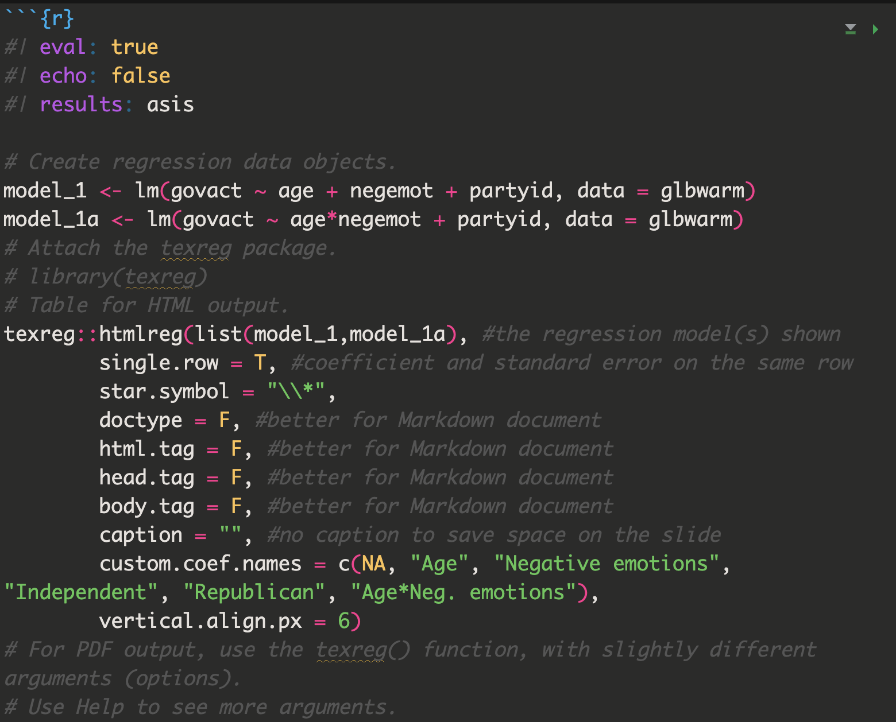

Overview
- Questions from the previous session about statistical model?
- Presenting results in Reproducible Text and Print-Quality Tables
Reproducible Presentation of Results
Once you fit your statistical model, you’ll need to interpret and present the results, ideally in a way that is easily reproducible. R provides many useful tools for this. Let’s take a look.
Example data
Example data: glbwarm (accessible within this
tutorial).
Source: Erik Nisbet; http://afhayes.com/
Inspect the variables in the Environment.
Main data types: 1. Number: govact,
posemot, negemot, age. 2.
Character: ideology, sex,
partyid.
Inspect variable summaries.
summary(glbwarm) govact posemot negemot ideology
Min. :1.000 Min. :1.000 Min. :1.000 Length:815
1st Qu.:4.000 1st Qu.:2.000 1st Qu.:2.330 Class :character
Median :4.800 Median :3.000 Median :3.670 Mode :character
Mean :4.587 Mean :3.132 Mean :3.558
3rd Qu.:5.600 3rd Qu.:4.000 3rd Qu.:5.000
Max. :7.000 Max. :6.000 Max. :6.000
age sex partyid
Min. :17.00 Length:815 Length:815
1st Qu.:36.00 Class :character Class :character
Median :51.00 Mode :character Mode :character
Mean :49.54
3rd Qu.:63.00
Max. :87.00 Present Statistical Results in Text
Let’s present the results of the following t test in APA style using reproducible code.
Run an independent samples t test to examine whether younger participants (age < median age) show more support for government action than older participants (age >= median age).
# First a new variable 'age_cat' to specify the age groups "younger" and "older" and save it in the glbwarm dataframe.
# Then conduct the t-test.The code below takes our result_t object and formats it
in APA style. The resulting text is fully reproducible and helps you
avoid copy-pasting, typos, and extra work in case your data changes.
What does the digits argument do?
paste0( # base R function to concatenate strings
"*t* (",
round(result_t$parameter, digits = 2), ") = ", # df
round(result_t$statistic, digits = 2), # t
", *p* = ", round(result_t$p.value, digits = 3), # p
", 95%CI[", round(result_t$conf.int[1], digits = 2), # 95%CI lower
", ", round(result_t$conf.int[2], digits = 2), "]") # 95%CI upper[1] "*t* (784.98) = -2.78, *p* = 0.006, 95%CI[-0.45, -0.08]"The stars will turn t and p into italics in a rendered document by using
This works well for this particular t-test, but it isn’t very flexible. What if the p-value of a test is < .001? We should report it as “p < .001”. Below is a more flexible version of our code that implements this.
- What does the
digitsargument do? - To which function does it belong?
- Explain how ’ifelse()` works.
Experiment with the code to check your answers.
paste0("*t* (",
format(round(result_t$parameter, digits = 2), nsmall = 2), ") = ",
format(round(result_t$statistic, digits = 2), nsmall = 2),
", *p* ",
ifelse(result_t$p.value < 0.0005,
paste0("= ", format(round(result_t$p.value, digits = 3), nsmall = 2)),
"< 0.001"),
", 95%CI[", format(round(result_t$conf.int[1], digits = 2), nsmall = 2),
", ", format(round(result_t$conf.int[2], digits = 2), nsmall = 2), "]")Hint: Use help on functions format()
and ifelse().
Print-Quality Results Tables
Off-The-Shelf Tables
There are several packages that help you to tabulate statistical results. The table below lists some of them with their characteristic features.
| Package | Models | Format | Style | Comparison<sup>*</sup> | Peculiarities |
|---|---|---|---|---|---|
| base, stats | all | plain text |
|
|
summary() and print(), only for quick inspection |
| stargazer | regression | PDF, HTML, plain | div., not APA | side-by-side | |
| texreg | regression | PDF, HTML, plain | generic | side-by-side | texreg(), hmtlreg(), screenreg() |
| * Results of two or more models in one table. |
Print-Quality Table With texreg
| Model 1 | Model 2 | |
|---|---|---|
| (Intercept) | 3.38 (0.17)*** | 4.52 (0.33)*** |
| Age | -0.00 (0.00) | -0.03 (0.01)*** |
| Negative emotions | 0.46 (0.03)*** | 0.14 (0.08) |
| Independent | -0.30 (0.10)** | -0.31 (0.10)** |
| Republican | -0.59 (0.09)*** | -0.55 (0.09)*** |
| Age*Neg. emotions | 0.01 (0.00)*** | |
| R2 | 0.37 | 0.38 |
| Adj. R2 | 0.37 | 0.38 |
| Num. obs. | 815 | 815 |
| ***p < 0.001; **p < 0.01; *p < 0.05 | ||
The above table is generated from the code below. What happens if you run the code?
# Attach the texreg package.
library(texreg)
# Table for HTML output.
texreg::htmlreg(list(model_1,model_1a), #the regression model(s) shown
single.row = T, #coefficient and standard error on the same row
star.symbol = "\\*",
doctype = F, #better for Markdown document
html.tag = F, #better for Markdown document
head.tag = F, #better for Markdown document
body.tag = F, #better for Markdown document
caption = "", #no caption to save space on the slide
custom.coef.names = c(NA, "Age", "Negative emotions", "Independent", "Republican", "Age*Neg. emotions"),
vertical.align.px = 6)
# For PDF output, use the texreg() function, with slightly different arguments (options).
# Use Help to see more arguments.htmlreg() produces HTML code:
- This code should not be treated as ordinary text when the Quarto document is rendered.
- Instead, it must be used and formatted as HTML code.
The results='asis' code chunk option is needed to knit
the html output of the code chunk as formatted text.
The full code chunk in the Quarto document (note the
results='asis' argument):

And this is what the rendered text looks like:
| Model 1 | Model 2 | |
|---|---|---|
| (Intercept) | 3.38 (0.17)*** | 4.52 (0.33)*** |
| Age | -0.00 (0.00) | -0.03 (0.01)*** |
| Negative emotions | 0.46 (0.03)*** | 0.14 (0.08) |
| Independent | -0.30 (0.10)** | -0.31 (0.10)** |
| Republican | -0.59 (0.09)*** | -0.55 (0.09)*** |
| Age*Neg. emotions | 0.01 (0.00)*** | |
| R2 | 0.37 | 0.38 |
| Adj. R2 | 0.37 | 0.38 |
| Num. obs. | 815 | 815 |
| ***p < 0.001; **p < 0.01; *p < 0.05 | ||
Functions for lm objects
htmlreg() is one example of a function that operates on
lm() objects.
Other useful functions:
confint(),coef(),resid().
Find out what these functions do. Apply them to model_1
and check out the options of these functions.
Hint: Read the help info to these functions.
Custom Tables with broom and knitr
For full control of your table, create it with packages
broom and knitr.
(broom is not part of the tidyverse package)
You need 3 steps:
- Use function
tidy()in thebroompackage to extract relevant statistics from a statistical results object into a tibble. - Select and adjust values to suit your needs.
- Create a table with
knitr::kable()andkableExtrawith all formatting options you need.
Step 1: Use function tidy() in the broom
package to extract relevant statistics
Use tidy() and data objext model_1a to see
the regression coefficients with their standard errors, t values, p
values as a tibble.
Can you also get the 95% confidence intervals?
Send the result to the screen.
Hint: Check out help on tidy.lm. You
are tidying the results of a linear model (lm()).
model_1a |> tidy(conf.int = TRUE, conf.level = 0.95)Step 2: Select and adjust values to suit your needs.
broom produces a tibble (data frame), so you can wrangle
it like any other.
Explain the code below. If you are unsure about a code element, change it and see what happens.
model_1a |>
tidy(conf.int = TRUE, conf.level = 0.95) |>
mutate(
estimate = format(round(estimate, digits = 2), nsmall = 2),
p.value = format(round(p.value, digits = 3), nsmall = 3),
CI = paste0( "[", format( round(conf.low, digits = 2), nsmall = 2 ), ", ", format( round(conf.high, digits = 2), nsmall = 2 ), "]" )
) |>
select(term, estimate, p.value, CI)If you want to use stars to mark the significance level of regression coefficients, you can add a new character variable showing the number of stars.
Find and explain the line of code that adds stars indicating the significance level.
model_1a |>
tidy(conf.int = TRUE, conf.level = 0.95) |>
mutate(
estimate = format(round(estimate, digits = 2), nsmall = 2),
p.value = format(round(p.value, digits = 3), nsmall = 3),
sig = case_when( p.value < .001 ~ "***", p.value < .01 ~ "**", p.value < .05 ~ "*", TRUE ~ "" ),
CI = paste0( "[", format( round(conf.low, digits = 2), nsmall = 2 ), ", ", format( round(conf.high, digits = 2), nsmall = 2 ), "]" )
) |>
select(term, estimate, p.value, CI)Step 3: Create a table with knitr::kable() and
kableExtra
With knitr and kableExtra, we can create a
table including footnotes.
Play around with the kable and kableExtra
options to see what they do.
model_1a |>
tidy(conf.int = TRUE, conf.level = 0.95) |>
mutate(
estimate = format(round(estimate, digits = 2), nsmall = 2),
p.value = format(round(p.value, digits = 3), nsmall = 3),
sig = case_when(
p.value < .001 ~ "***",
p.value < .01 ~ "**",
p.value < .05 ~ "*",
TRUE ~ "" ),
CI = paste0( "[", format( round(conf.low, digits = 2), nsmall = 2 ),
", ", format( round(conf.high, digits = 2), nsmall = 2 ), "]" )
) |>
select(term, estimate, sig, CI) |> #p.value dropped
kable(digits = c(0, 2, 0, 0),
col.names = c("Parameter", "B", "", "95% CI"),
align = "lrlc",
caption = "Table 1. Predicting opinions about global warming.",
booktabs = TRUE, #nicer layout in PDF
escape = FALSE #pay attention to special characters
) |>
kable_styling(full_width = FALSE) |>
row_spec(0, font_size = 16) |>
column_spec(1, width = "5cm") |>
column_spec(2, width = "3cm") |>
column_spec(3, width = "0.5cm") |>
column_spec(4, width = "5cm") |>
footnote(
general_title = "",
general = " * p < .05. ** p < .01. *** p < .001."
)| Parameter | B | 95% CI | |
|---|---|---|---|
| (Intercept) | 4.52 | *** | [ 3.87, 5.16] |
| age | -0.03 | *** | [-0.04, -0.01] |
| negemot | 0.14 | [-0.02, 0.30] | |
| partyidIndependent | -0.31 | ** | [-0.50, -0.12] |
| partyidRepublican | -0.55 | *** | [-0.73, -0.36] |
| age:negemot | 0.01 | *** | [ 0.00, 0.01] |
| * p < .05. ** p < .01. *** p < .001. |
Some final points about tabulating results:
Special characters such as stars (
*) and percentage signs (%) can be troublesome in tables. You may have to escape them with one or more backslashes (\\).PDF output has more formatting options than HTML (or Word).
kable()does not render nicely to Word. Render to HTML and import HTML in Word.
Up Next
- On the to-do list:
- Working on your individual project.
- Exam: keep practicing
- Plan in time to format your final report based on content discussed in Session 11.
- Catch up
- Check-in with your Study Buddy
- Prepare (see Canvas Module Guide):
- Complete the homework (homework room, study buddy, alone…)
- Submit questions by 4 PM the day before each tutorial on the Canvas Discussion Forum
Reminder
Statistical analyses are not necessary for the Data Project. The Data Project focuses on visualizations.
You can, however, use statistical analysis to detect patterns in your data that you then try to visualize. If you do that, do not use off-the-shelf plots. Show that you can create a plot that hopefully is more attractive and more informative than off-the-shelf statistical plots.